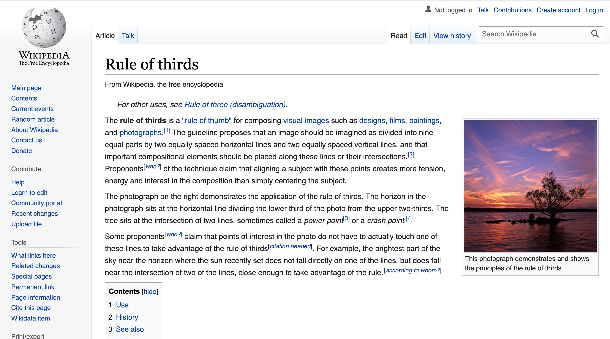
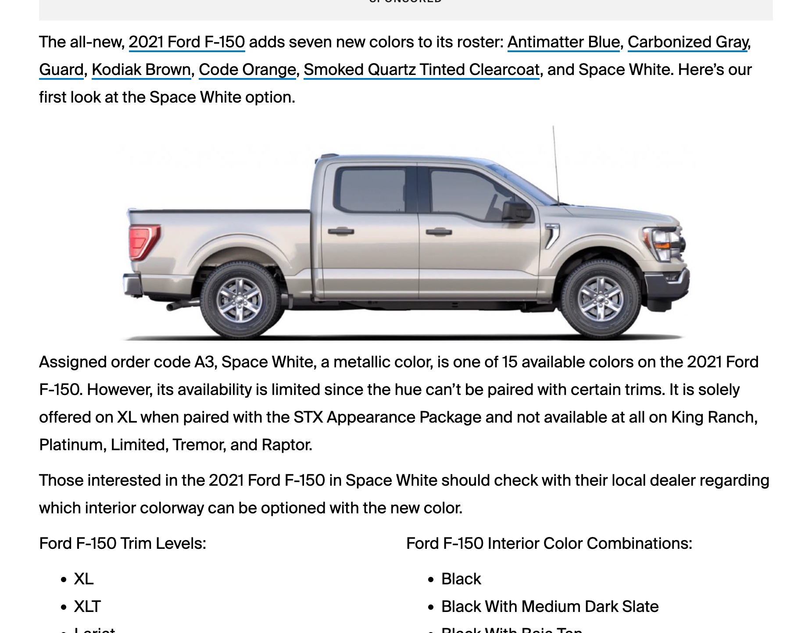
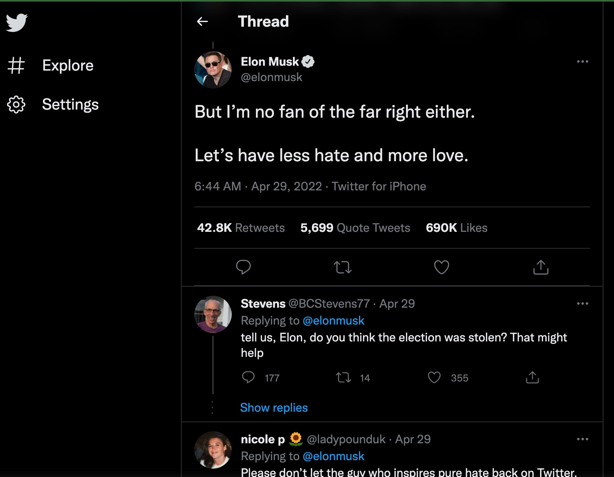

Lesson02 Rule of Thirds, White Space and Clean Design, PARC: Proximity
Rule of Thirds

This rule says to break down a square into thirds and use that to show focus:
We see here that wikipedia uses this rule to seperate body in the center, image and content on the right, and navigation tabs on the left
White Space and Clean Design
This rule states to have white space and clean design so that you can see the message clearly and not have vague understanding
This could apply to any text site but they use of white space on ford.com here helps us to direct focus here ford uses different paragraph styles to add images and force your eyes to read the text

PARC: Proximity
This rule lets you know objects are related due to their proximity
Elon Musk and his Twitter are a text based social media platform. Using proximity one can idenfity who wrote what tweet and who is replying to the thread
